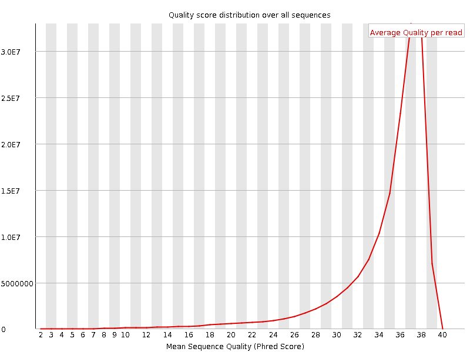
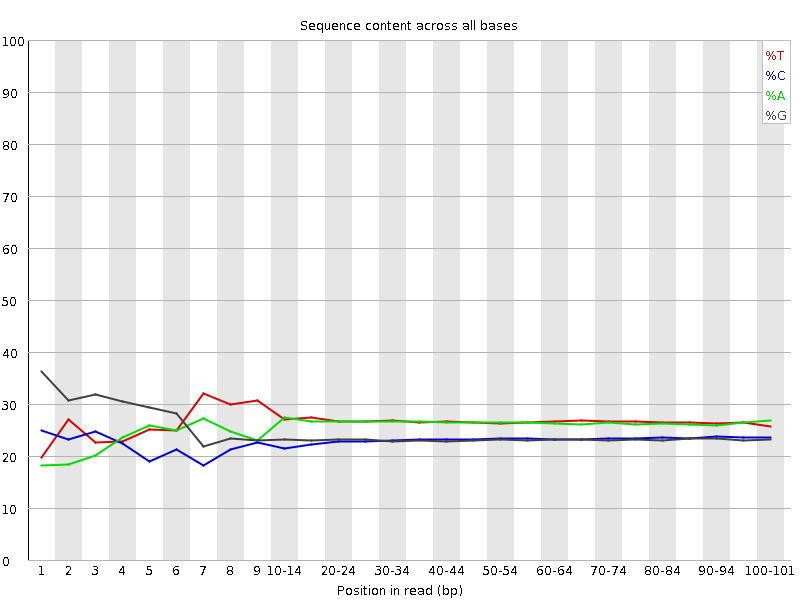
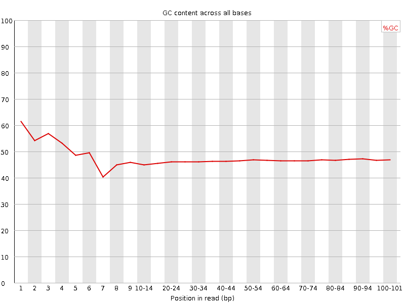
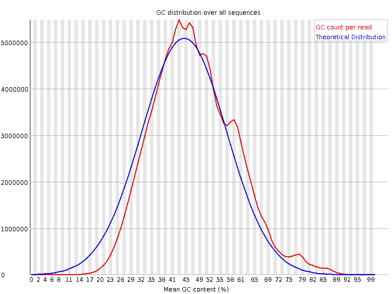
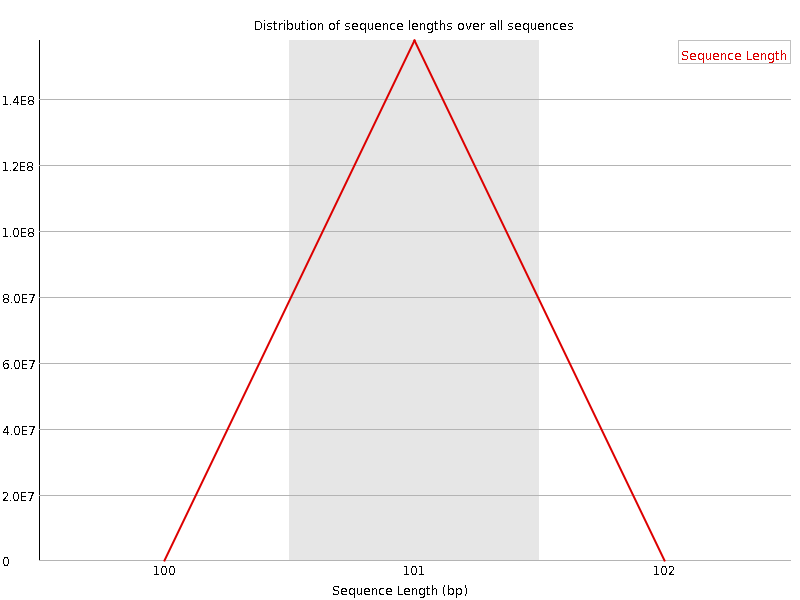
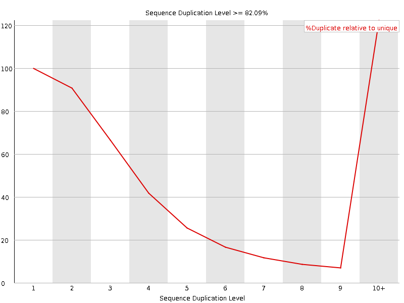
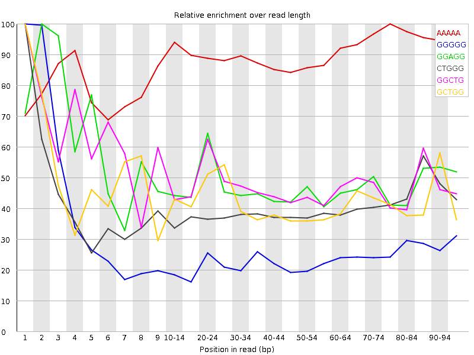

![[OK]](Icons/tick.png) Basic Statistics
Basic Statistics
| Measure | Value |
|---|---|
| Filename | SRR534335_1.fastq |
| File type | Conventional base calls |
| Encoding | Sanger / Illumina 1.9 |
| Total Sequences | 157580617 |
| Filtered Sequences | 0 |
| Sequence length | 101 |
| %GC | 46 |
Per base sequence quality

Per sequence quality scores

![[WARN]](Icons/warning.png) Per base sequence content
Per base sequence content

![[FAIL]](Icons/error.png) Per base GC content
Per base GC content

Per sequence GC content

Per base N content

Sequence Length Distribution

Sequence Duplication Levels

Overrepresented sequences
| Sequence | Count | Percentage | Possible Source |
|---|---|---|---|
| GTGAGTTTTAGCTTTATTGGGGAGGGGGTGATCTAAAACACTCTTTACGC | 470295 | 0.2984472385966099 | No Hit |
Kmer Content

| Sequence | Count | Obs/Exp Overall | Obs/Exp Max | Max Obs/Exp Position |
|---|---|---|---|---|
| AAAAA | 68685460 | 3.5653965 | 3.9532952 | 75-79 |
| GGGGG | 34204260 | 2.9600425 | 11.695543 | 1 |
| GGAGG | 32620500 | 2.5486689 | 5.2718015 | 2 |
| CTGGG | 31601320 | 2.4877548 | 6.1350846 | 1 |
| GGCTG | 31599820 | 2.4876366 | 5.1443486 | 1 |
| GCTGG | 29609420 | 2.3309464 | 5.422292 | 1 |
| GGGAG | 29182190 | 2.2800307 | 5.2603025 | 2 |
| GGCAG | 26672355 | 2.1343644 | 5.0650363 | 1 |
| TGGGG | 24681260 | 1.8970785 | 5.672969 | 1 |
| GGGGC | 21331715 | 1.8907229 | 5.755956 | 2 |
| GGGGA | 24033760 | 1.8777792 | 7.4867334 | 1 |
| GGGTG | 22999890 | 1.767843 | 6.8740444 | 2 |
| GGGGT | 22342970 | 1.7173502 | 9.687402 | 3 |
| CGGGG | 18788890 | 1.6653414 | 9.5111885 | 1 |
| TTTTA | 33868400 | 1.6467144 | 5.313712 | 6 |
| GTGGG | 20783210 | 1.5974623 | 10.174769 | 1 |
| TGGGT | 22824855 | 1.5582108 | 6.1952724 | 2 |
| GTTTT | 25940340 | 1.3969932 | 5.2946734 | 5 |
| GGTCT | 18501195 | 1.2936068 | 5.147041 | 5 |
| GGGTC | 16414285 | 1.2921838 | 6.110594 | 4 |
| GGCGG | 13892440 | 1.2313476 | 5.065169 | 1 |
| GTGAG | 16527200 | 1.1468915 | 6.020387 | 1 |
| GCGGG | 11602940 | 1.0284193 | 6.358118 | 1 |
| TAGCT | 15932655 | 1.0057633 | 5.4713 | 9 |
| TTAGC | 13506865 | 0.85263294 | 5.2149057 | 8 |